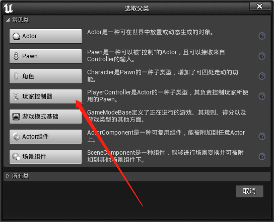
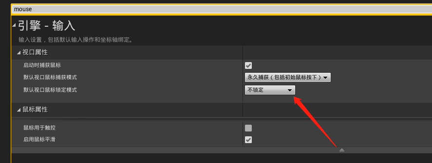
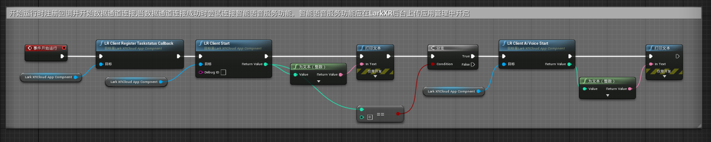

在 UE4 中使用 DataChannel 中附带 Demo Plugin
下载数据通道_与应用通信 zip 包后，找到/3207 及以上版本适用/doc/unreal 找到默认的 Demo plugin 项目。
可以参考 Demo 项目进行数据通道 c++ dll 的集成也可以将 Demo 项目中的 Plugin 直接导入到现有项目中。
下面主要介绍直接将 Demo 中的 Plugin 导入到现有项目。
后续将推出完整的 UE4 插件。
Demo Plugin 集成
- 拷贝并导入 Demo Plugin
Demo 项目使用 UE4.27 版本
直接将下载的zip包中的 Demo 项目的 Plugins 目录下的 LarkXRCloudApp 拷贝到现有的项目的 Plugins 下。
此处演示的是新建的一个项目，所以 Plugins 目录下没有其他文件。

重新打开项目，打开插件菜单选择 LarkXRCloudApp 插件。
- 新建 Actor 蓝图添加数据通道组件
首先保存当前关卡并设置默认关卡为当前保存的关卡。

新建一个 Actor 并且添加 LarkXRCloudAppComponent
- 启动数据通道
蓝图中数据通道函数名称都以 LR 打头，方便搜索。
首先在开始时添加 Task 信息回调函数注册调用和并启动数据通道功能。如下所示：
如果不注册回调函数 TaskStatus 代理事件将不起作用，但数据通道其他功能不受影响。
TaskStatus 主要在应用被平行云 LarkXR 系统启动生命周期回调，如应用在云渲染系统中启动后将获得一个 TaskID，并切 TaskStatus 将变化为运行中。
- 监听 TaskStatus 变化。添加如下代理事件可以监听 Task 的变化

- 监听收到的数据。添加如下代理可监听收到的字符消息

- 关闭数据通道。调用LRClientStop函数即可关闭数据通道功能
添加简单测试 UI
新建显示鼠标的游戏模式
首先新建一个显示鼠标的控制器，然后新建游戏模式并选择该控制器。然后将游戏模式选择为该显示鼠标的游戏模式。并设置不锁定鼠标。



- 添加测试 UI
添加一个 UI 空间蓝图，并更改关卡蓝图，当启动时创建该控件并添加到视口。

- 添加测试 UI 输入文字并发送功能
添加一发送按钮和输入框。当点击发送按钮时，调用 LRClientSendText 发送字符串。

- 将添加好的 Actor 添加到场景
Demo Plugin 打包测试
- 打包 Win64 版本

- 上传到 LarkXR 后台
上传后应注意选择 Binaries64 文件夹下面的 exe

- 在网页客户端启动调试

数据通道连通后可以根据业务需要进行网页的二次开发对接。 可参考项目lark_xr_unity3d_demos vh-webclient 中的网页前端代码
智能语音相关功能
LarkXRAiVoice.h
C++ 中可直接调用 LarkXRDataChannel64 中的接口
开启智能语音功能并注册回调函数,要注意在数据通道开启之后再启用智能语音功能
LARKXR_API int DC_CALL lr_client_register_aivoice_callback(on_aivoice_callback cb,void* user_data);
回调数据结构
struct AiVoicePacket
{
bool url; //true :online audio url(mp3) .false: audio pack (pcm)
unsigned int voice_id; //语音ID
const char* online_url; //如果url为true,该字段为url地址,否则该字段为NULL
int url_size; //url长度 包含\0
const char* nlg; //当前语音对讲的文本
int nlg_size; //对讲文本长度 包含\0
//如果URL为false 那么下面字段描述每一个pcm包
unsigned int slice_id; //一个语音分片ID
int samples_per_sec; //eg.16000
int channels; //eg.1
const char* audio; //数据包指针,如果 url 为true 该字段为空
int size_byte; //每一包的字节数
bool last_packet; //是否为最后一包
};
typedef void(*on_aivoice_callback)(struct AiVoicePacket* packet,void* user_data);
在蓝图中开启并订阅回调
当数据通道连接成功时开启智能语音服务功能
当 LR_Client_Start 成功之后通过 LR_Client_AiVoice_Start 启动智能语音功能


打包发布
- 服务器应确认有智能语音授权
- 在 LarkXR
后台应用管理-通用高级设置-智能语音选择是